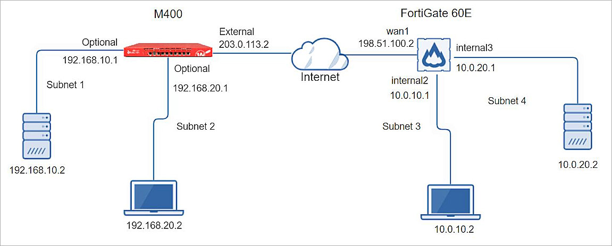
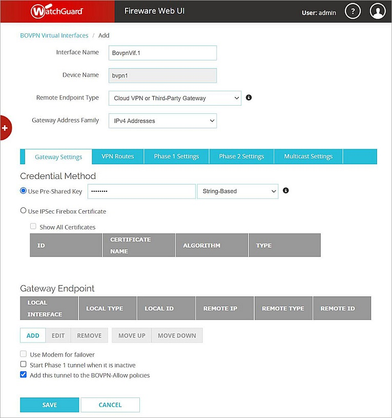

WatchGuard provides integration instructions to help our customers configure WatchGuard products to work with products created by other organizations. If you need more information or technical support about how to configure a third-party product, go to the documentation and support resources for that product.
This integration guide describes how to configure a BOVPN virtual interface tunnel between a WatchGuard Firebox and a Fortinet FortiGate 60E.
Contents
Integration Summary
The hardware and software used in this guide include:
- WatchGuard Firebox
- Fireware v12.10 or higher
- Fortinet FortiGate 60E
- FortiOS v7.4.1 or higher
Topology
This diagram shows the topology for a BOVPN virtual interface connection between a Firebox and a Fortinet FortiGate 60E.

Configure the Firebox
To configure a BOVPN virtual interface on your Firebox, from Fireware Web UI:
- Select VPN > BOVPN Virtual Interfaces.
The BOVPN Virtual Interfaces configuration page opens. - Click Add.
- In the Interface Name text box, type a name to identify this BOVPN virtual interface.
- From Remote Endpoint Type drop-down list, select Cloud VPN or Third-Party Gateway.
- Keep the default Gateway Address Family setting, which is IPv4 Addresses.
- In the Credential Method section, select Use Pre-Shared Key.
- In the adjacent text box, type the pre-shared key. Keep the default String-Based setting.

- In the Gateway Endpoint section, click Add.
The Gateway Endpoint Settings dialog box opens. - On the Local Gateway tab, from the Physical drop-down list, select External.
- From the Interface IP Address drop-down list, select Primary Interface IPv4 Address.
- Select By IP Address.
- In the adjacent text box, type the public (external) IP address of your Firebox.

- On the Remote Gateway tab, select Static IP Address.
- In the adjacent text box, type the public IP address of the FortiGate 60E wan1 interface.
- Select By IP Address.
- In the adjacent text box, type the public IP address of the FortiGate 60E wan1 interface.

- Click OK.
- In the Gateway Endpoint section, select Start Phase 1 tunnel when it is inactive.
- Select Add this tunnel to the BOVPN-Allow policies.
- Click Save.

- Select the BOVPN virtual interface that you created.
- Click Edit.
- Click the VPN Routes tab.
- Click Add.
- From the Choose Type drop-down list, select Network IPv4.
- In the Route To text box, type the IP segment of a route that will use this virtual interface.

- Click OK.

- Repeat the previous step to add another VPN Route to another subnet.


- Click the Phase 1 Settings tab.
- From the Version drop-down list, select IKEv2.
- Keep all other Phase 1 settings as the default values.

- Keep Phase 2 Settings as the default values.

- Click Save.
Configure the FortiGate 60E
Follow these steps to configure the interfaces, VPN settings, policies, and routes on your FortiGate device.
Interface Settings
- Log in to the FortiGate 60E Web UI at https://<IP address of FortiGate 60E>. The default IP address is 192.168.1.99.
- Select Network > Interfaces.
- Configure the external interface (wan1) and the internal interface (internal2 and internal3). For information about how to configure interfaces, go to the Fortinet User Guide.

IPSec VPN Tunnels Settings
- Select VPN > IPsec Tunnels.

- Click Create New > IPsec Tunnel.
- In the Name text box, type the object name. In our example, the name is To WG.
- From the Template Type options, select Custom to continue without a template.

- Click Next.
- In the Network section, for IP Version, select IPv4.
- From the Remote Gateway drop-down list, select Static IP Address.
- In the IP Address text box, type the WatchGuard Firebox public IP address. In our example, the IP address is 203.0.113.2.
- From the Interface drop-down list, select wan1. Leave the default value for all other settings in the Network section.
- In the Authentication section, from the Method drop-down list, select Pre-shared Key.
- In the Pre-shared Key text box, type the pre-shared key.
- In the IKE section, for Version, select 2.
- In the Phase 1 Proposal section, remove all proposals except AES256 for encryption and SHA256 for authentication.
- For the Diffie-Hellman Groups, select 14. Clear all other check boxes.
- Leave the default value for all other Phase 1 settings.

- In the Phase 2 Selectors section, expand Advanced.
- Remove all proposals except AES256 for encryption and SHA256 for authentication.
- Select the Enable Replay Detection check box.
- Select the Enable Perfect Forward Secrecy (PFS) check box.
- For the Diffie-Hellman Groups, select 14. Clear all other check boxes.
- Leave the default value for all other Phase 2 selectors.

- Click OK.

Policy Settings
- Select Policy & Objects > Addresses.

- Click Create New > Address.
- In the Name text box, type a name for the IP address. In our example, the name is WG_INT.
- From the Type drop-down list, select Subnet.
- In the IP/Netmask text box, type the IP segment.
- Leave the default value for all other settings.

- Click OK.
- Repeat the previous step to create more IP segments.

- Select Policy & Objects > Firewall Policy.

- Click Create New.
- In the Name text book, type the object name. In our example, the name is Policy to WG.
- From the Incoming Interface drop-down list, select internal2.
- From the Outgoing Interface drop-down list, select To WG.
- From the Source Address list, select FG_INT.
- From the Destination Address list, select WG_NT.
- From the Schedule drop-down list, select Always.
- From the Service list, select All.
- In the Action list, select Accept.
- Disable NAT under Firewall/Network Options.
- Leave the default value for all other settings.

- Click OK.
- Repeat these steps to create another policy.

- Repeat these steps to create two additional policies for another subnet.


The policies that you created appear on this page.

Route Settings
- From the navigation menu, select Network > Static Routes.

- Click Create New.
- In the Destination section select Subnet.
- Type the IP segment of the VPN remote tunnel.
- From the Interface drop-down list, select To WG.
- Leave the default value for all other settings.

- Click OK.
- Repeat these steps to create another route for another subnet.

- Click OK.

- (Optional) If you did not add a gateway for the wan1 interface, you must repeat these steps to configure wan1.
Test the Integration
To test the integration, from Fireware Web UI:
- Select System Status > VPN Statistics.
- Verify that the VPN tunnel is active.

To test the integration, from the FortiGate Web UI:
- Select Dashboard > Network > IPsec.
- Verify that the VPN tunnels is active.

Finally, verify that the hosts successfully ping.